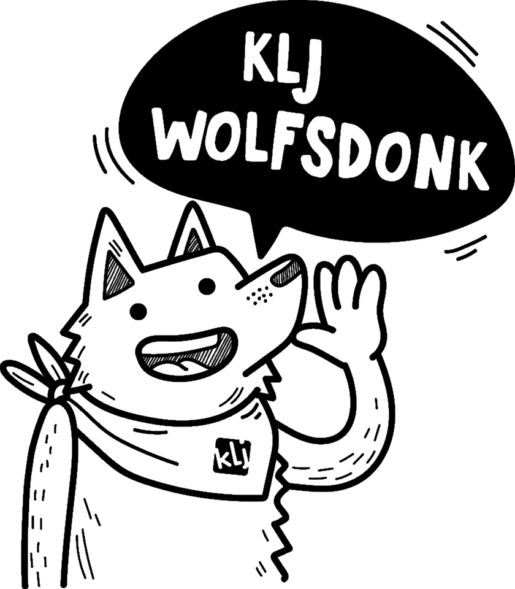

Weekend
Joebadoebadoe, we gaan op weekend!
Brr, voel je dat? Wat is het hier koud! En weet je hoe dat komt? We zijn in de ijstijd beland! Dit jaar gaan we een weekend lang de koudste periode uit de geschiedenis verkennen, en ook jullie zijn uitgenodigd!
Vrijdagavond 12 april worden jullie om 19u verwacht in Balen, waar jullie ontvangen zullen worden door holbewoners, elanden, en zelfs mammoeten! Eet zeker thuis, want er wordt vrijdagavond geen eten voorzien. Zondag 14 april om 10u mogen de mama’s en papa’s jullie weer komen oppikken.
Onderaan kan je de volledige bijlage vinden, alsook het inschrijvingsformulier en de medische fiche.
Vergeet zeker het volgende niet:
- Speelkleren en schoenen die vuil mogen worden
- Regenjas
- KLJ-sjaaltje en trui
- Pyjama en ondergoed (vergeet ook geen kousen)
- Toiletgerief (tandenborstel, kam...)
- Bord, bestek, beker en keukenhanddoeken
- Dekbedovertrek, slaapzak en kussen
- Verkleedkleren (holbewoner, ijspegel, Bigfoot...)
Voor de Wolfkes, Girry’s, Squirrels en Skunks zijn er bedden voorzien. De Waspi’s en Aspi’s brengen een veldbed of matje mee.
Adres: Malou
Zwaluwstraat 2
2490 Balen
KLJ Wolfsdonk?
Zijn jouw zaterdagen ook altijd zo lang en saai?
Verveel jij je elk weekend weer, zit je de hele dag te suffen achter jouw computer?
Wil jij ook iets meer halen uit die zaterdag?
Rep je dan als de bliksem naar KLJ WOLFSDONK!
KLJ wablief?!
KLJ Wolfsdonk natuurlijk!
KLJ Wolfsdonk is een te gekke bende van kinderen en jongeren tussen 6 en 26 jaar.
Elke zaterdag kan je ons vinden in Wolfsdonk en omstreken, waar we het hele dorp op
stelten zetten met onze knotsgekke activiteiten!
Voor wie?
KLJ is er voor iedereen, en dus ook voor jou!
Wij, van KLJ Wolfsdonk, zijn verdeeld in zes leeftijdsgroepen: Wolfkes, Girry's,
Squirrels, Skunks,Waspi's en Aspi's. Elke keer opnieuw serveren onze leiders en
leidsters alle zes de leeftijdsgroepen een activiteit om nooit meer te vergeten.
Want bij KLJ Wolfsdonk krijg je vlees op je bord, puur en onversneden!
Nieuwsgierig?
Hongerig naar meer?
Klik dan op 'Praktisch' om alles te
weten te komen over wie we zijn, wat we doen, wanneer we het doen, en hoe we het doen!
Praktische info
KLJ Wolfsdonk is een toffe bende die elke week een heel avontuur klaarstoomt voor uw kleine of al net iets minder kleine rakker. Onze werking is verdeeld in zes leeftijdsgroepen:
- Wolfkes: van 6 tot 8 jaar, dus 1e en 2e leerjaar;
- Girry's: van 8 tot 10 jaar, dus 3e en 4e leerjaar;
- Squirrels: van 10 tot 12 jaar, dus 5e en 6e leerjaar;
- Skunks: van 12 jaar tot 14 jaar, dus 1e en 2e middelbaar;
- Waspi's: van 14 jaar tot 16 jaar, dus 3e en 4e middelbaar;
- Aspi's: vanaf 16 jaar, dus vanaf het 5e middelbaar.
Afhankelijk van het aantal leden kunnen de groepen in het begin van elk werkjaar wel wat aangepast worden. Het is bovendien ook steeds mogelijk om uw kind in een jongere leeftijdsgroep te plaatsen, als u of uw kind dat wenst. Voor meer informatie over de (groeps)leiding kan u hier terecht.
Waar & wanneer?
De activiteiten gaan steeds door op zaterdagnamiddag, van 14u tot 17u.
Benieuwd naar onze KLJ-werking? Kom gerust eens een kijkje nemen!
Onze afdeling bevindt zich in het gewest Demerland.
Je vindt ons elke week terug in ons vaste lokaaltje: de Oude Jongensschool in het
landelijke Wolfsdonk. Ons lokaaltje is gelegen tegenover de Wolfdonkse bibliotheek en
heeft het volgende adres:
Weybroekstraat 2A
3201 Wolfsdonk
Grotere kaart weergeven
Extra info
KLJ Wolfsdonk is een dolenthousiaste jeugdbeweging die elke zaterdag weer een spetterende activiteit in elkaar bokst. Maar, KLJ is nog veel meer dan een jeugdbeweging alleen! Laten we even een verfrissende duik nemen in het hele KLJ-gebeuren.
De KLJ
 KLJ
staat voor Katholieke Landelijke Jeugd en bestaat al sinds 1927. Dat wil zeggen dat we
dit jaar ons 92ste kaarsje mogen uitblazen!
KLJ
staat voor Katholieke Landelijke Jeugd en bestaat al sinds 1927. Dat wil zeggen dat we
dit jaar ons 92ste kaarsje mogen uitblazen!
In onze 280 afdelingen komen er gemiddeld zo'n 30 000 jongeren bijeen. Dit maakt KLJ één
van de grote jeugdbewegingen, en de grootste jongerenbeweging in Vlaanderen.
KLJ richt zich ook op drie grote doelen:
- jonge mensen samenbrengen;
- werken aan persoonlijke vorming én de groepsvorming van de leden;
- meewerken aan de opbouw van de samenleving.
Hierbij komt ook het werkthema ‘KLJ voor iedereen’. KLJ voor iedereen houdt in dat KLJ wil openstaan voor alle kinderen en jongeren. Of je nu arm bent of rijk, groot of klein, of lijdt aan een handicap: bij KLJ Wolfsdonk is iedereen welkom!
Elke week opnieuw werkt de vertrouwde leiding aan deze doelen, met de hulp van een hele reeks inhoudelijke en methodische speerpunten. Zo brengt KLJ Wolfsdonk niet alleen berg plezier voor de kinderen, maar leren de leden ook wat bij. Zo leren ze meedraaien in hun eigen kleine maatschappij: sociale vaardigheden zijn in de huidige samenleving immers belangrijker dan ooit!
Historiek
Toen in 1927 de BJB (Boerenjeugdbond) opgericht werd, was KLJ
Wolfsdonk hierin een van de voortrekkers. Anders gezegd; KLJ Wolfsdonk is dus één van de oudste KLJ's in het land! De BJB was
eigenlijk de huidige KLJ, maar de naam Katholieke Landelijke Jeugd kwam pas in het jaar
1965 aangedraafd.
KLJ Wolfsdonk zelf is pas echt beginnen groeien halverwege de jaren '80.
Wolfkes

Stien
Stien Coorevits
6 juli 1997
Oude Mechelsebaan 383
3201 Langdorp
Studie: Bachelor in de architectuur, universiteit Hasselt
Taak bij KLJ:
Outfitverantwoordelijke
Ledencommunicatie

Lotte
Lotte Crauwels
14 augustus 1996
Studie: Bachelor
in audiovisuele kunsten animatiefilm
Taak bij KLJ:
Publicatie
Materiaalverantwoordelijke
Bram
Bram Vereycken
17 november 1993
Mosvenne 11
3272 Testelt
Studie: Bachelor
in de godgeleerdheid en de godsdienstwetenschappen, KULeuven
Taak bij KLJ:
Vuilnis
Dorpsraad

Lotte
Lotte Coorevits
6 april 1999
Studie: Bachelor
in de toegepaste psychologie
Taak bij KLJ:
Materiaalverantwoordelijke
Kamp- en weekendverantwoordelijke
Girry's

Noortje
Noortje Verbruggen
21 september 1999
Mechelsebaan 21
3272 Testelt
Studie: Bachelor in de farmaceutische wetenschappen
Tel. 0498 23 99 63
Taak bij KLJ:
Hoofdleiding
EHBO
Gewest
Dorpsraad
Tinneke
Tinneke Jennes
22 december 1999
Studie: Business Support
Taak bij KLJ:
Secretaris
Sofie
Sofie Verdonck
30 April 1996
Bossestraat 12
3201 Langdorp
Studie: International Journalism aan Thomas More
Taak bij KLJ:
Materiaalverantwoordelijke
Publicatie
Notulist
Lode
Lode Degelin
7 juni 1999
Leemstraat 53
3272 Testelt
Studie: Criminologische Wetenschappen aan KU Leuven
Taak bij KLJ:
Dorpsraad
Kassier
Squirrels

Jakob
Jakob Robijns
24 november 1998
Kolkensvijverstraat 26
3201 Langdorp
Studie: Bachelor Toegepaste Informatica, Thomas More Geel
Tel. 0470433278
Taak bij KLJ:
Hoofdleiding
Siteverantwoordelijke
Publicatie
Wies
Wies Van Hirtum
4 maart 1997
Oude Mechelsebaan 374
3201
Langdorp
Studie: Bachelor in de
ingenieurswetenschappen, KULeuven
Taak bij KLJ:
Materiaalvertantwoordelijke
Drankverantwoordelijke
Ruben
Ruben Van De Velde
4 december 2000
Veelsebaan 24
3201 Langdorp
Studie: IT & Networks
Taak bij KLJ:
Hygiëne
Kamp- en weekendverantwoordelijke
Jef
Jef van Dessel
11 september 1996
Dries 86a
2230 Herselt
Studie: Master in de bio-ingenieurswetenschappen,
KULeuven
Taak bij KLJ:
Ledencommunicatie
Kamp- en weekendverantwoordelijke
Skunks

Tijs
Tijs Van Woensel
15 juli 1999
Monseigneur Bremsstraat 17a
3272 Testelt
Studie: IT &
netwerken
Taak bij KLJ:
Siteverantwoordelijke
Drankverantwoordelijke
Jeugdraad

Seppe
Seppe Degelin
17 december 2000
Leemstraat 53
3272 Testelt
Studie: Humane wetenschappen
Taak bij KLJ:
Hygiëne

Rik
Rik Van Dyck
27 oktober 1996
Weybroekweg 12
3201 Langdorp
Studie: Bachelor in de industriële ingenieurswetenschappen, KULeuven
Taak bij KLJ:
Vuilnis
Gewestraad
Dorpsraad
Waspi's

Thijs
Thijs Van Den Broeck
26 maart 1997
Welkensvenstraat 3
3201 Langdorp
Studie: Master in de Industriële Wetenschappen, Elektromechanica: Voertuigtechnieken
Taak bij KLJ:
Kassier
Katrijn
Katrijn Smekens
9 maart 1993
Galgeven 17
2230 Herselt
Studie: Bachelor in het sociaal werk
Werk: payroll professional Acerta
Taak bij KLJ:
Secretaris
Jordy
Jordy Delbarre
8 November 1996
Goorbaan 9
2230 Herselt
Taak bij KLJ:
Kamp- en weekendverantwoordelijke
Drankverantwoordelijke
Aspi's

Anke
Anke Brems
25 juni 1995
Vleminkstraat 90b
3201 Langdorp
Studie: Bachelor lerarenopleiding secundair onderwijs LO-Informatica
Werk: ICT Support
Taak bij KLJ:
Publicatie
Notulist
Karel
Karel Lommaert
18 april 1996
Vorstheide 36
2230 Herselt
Studie: Master in Game Technologies, BUas
Taak bij KLJ:
Hygiëne
Siteverantwoordelijke
Vliegers
Joren
Joren Kempenaers
15 juli 1996
Oude Mechelsebaan 483a
3201 Langdorp
Studie: Mechanische technieken, Damiaaninstituut Aarschot
Werk: Treinbestuurder
Taak bij KLJ:
Vuilnisverantwoordelijke
Julie
Julie Printemps
29 oktober 1997
Vennestraat 109
3201 Langdorp
Studie: Professionele bachelor in de vroedkunde
Taak bij KLJ:
EHBO
Ledencommunicatie
Activiteiten

Het is maart, en dat betekent dat het bijna lente is. Voelen jullie de lentekriebels al? De leiding alvast wel!
Wij herinneren jullie er graag nog eens aan dat je voor de KLJ nóóit goede kleren aandoet, enkel kleren die vuil mogen worden.
Ook al schijnt de zon, vergeet niet om je warm genoeg aan te kleden. In de schaduw kan het nog steeds koud zijn!
Zaterdag 2 maart:
Morgen is het carnaval, maar omdat één dag zo weinig is, gaan we dat vandaag ook al een beetje vieren op de KLJ! Trek je kast open en haal je meest knotsgekke outfit boven om te komen schitteren van 14u tot 17u aan ons lokaal.
Skunks: Vandaag hebben jullie je fiets en fietshelm nodig, en vergeet zeker ook geen slechte kleren aan te doen!
Zaterdag 9 maart:
Wist je dat Barbie vandaag 60 jaar wordt? Ze ziet er best goed uit voor haar leeftijd, nee? Maar op de KLJ spelen we natuurlijk niet met Barbies, maar spelen doen we wel! Ook deze week mogen jullie van 14u tot 17u aan ons lokaal komen ravotten. Tot dan!
Zaterdag 16 maart:
Jammer genoeg is er geen activiteit vandaag, want morgen is het onze eetdag!
Zondag 17 maart:
Hmm ruik je dat? Heerlijke videe of stoofvlees, en frikandellen met krieken, of een koude schotel, en curryworst of taart! Weet je waar je al dat lekker eten kan vinden? In zaal Den Abt, van 11.30u tot 18u, op onze jaarlijkse eetdag!
Kom zeker een hapje eten, en breng al je vrienden en familie mee, want dit jaar gaat de opbrengst naar ons binnenlands kamp én het buitenlands kamp in Slowakije!
Zaterdag 23 maart:
Joepie! Het is ein-de-lijk officieel lente! De vogeltjes beginnen aan hun nestjes, de bijtjes zoemen vrolijk door de bloemetjes, en het is KLJ! Van 14u tot 17u kunnen jullie in het lentezonnetje komen spelen aan ons lokaal.
Zaterdag 30 maart:
Het is niet omdat we deze nacht een uurtje minder kunnen slapen door de start van het zomeruur, dat we minder hard gaan spelen op de KLJ! Kom meespelen van 14u tot 17u aan ons lokaal in Wolfsdonk!
Zaterdag 6 april:
Vandaag geen activiteit, want morgen is het gewestactiviteit!
Aspi’s: Voor jullie is het vanavond al gewestactiviteit. Meer info hierover volgt nog.
Zondag 7 april:
Vandaag is het gewestactiviteit (niet voor de aspi’s)! En dat betekent samenspelen met KLJ’s van het hele gewest! Dit jaar gaat de gewestactiviteit door bij KLJ Keiberg, Lobbensestraat 93A. We spreken af in Keiberg zelf om 14u, en de ouders mogen jullie er weer komen oppikken om 16.30u.
Vrijdag 12 t.e.m. zondag 14 april:
Dit weekend niet één dag, maar een heel weekend KLJ! We nemen jullie dit weekend terug mee naar de ijstijd, dus vergeet zeker jullie bontjas en knots niet! En wie weet zien we wel prehistorische dieren, zoals een mammoet!
Vrijdagavond om 19u worden jullie verwacht in Balen. Eet zeker thuis, want er wordt vrijdagavond geen eten voorzien. Zondag om 10u mogen de mama’s en papa’s jullie weer komen oppikken.
Meer informatie over het weekend ontvangen jullie in een aparte mail.
Vrijdag 19 april:
Deze avond houden we ons KLJ-café weer! Vanaf 20u is iedereen welkom in zaal Den Abt om een glaasje te drinken, een babbeltje te slaan en een snackje te eten. Ook deze opbrengst gaat naar de kampen, dus nodig iedereen die je kent maar uit!
Zaterdag 20 april:
Elke zaterdag spelen we in de bossen en op de pleinen van het mooie Wolfsdonk, en in het dorp zelf. Vandaag zeggen we ‘dank u’ tegen ons dorpje door het helemaal op te ruimen! Breng je werkhandschoenen mee en kom van 14u tot 17u naar ons lokaal om de handen uit de mouwen te steken!
Zaterdag 27 april:
Vandaag is het een speciale dag. Niet alleen omdat het vandaag Koningsdag in Nederland is, of omdat het Wereld Tapir Dag is. Vandaag is vooral speciaal omdat het KLJ is! Joe-hoe! Van 14u tot 17u vliegen we er weer in! Kom zeker kijken wat de leiding vandaag weer in petto heeft.


Contact
Voor vragen en opmerkingen, contacteer ons via kljwolfsdonk@hotmail.com
Mocht je dringende vragen hebben, dan kan je een van de hoofdleid(st)ers bellen:
Noortje: 0498 23 99 63
Jakob: 0470 43 32 78
Voor direct contact, kom gerust eens langs op zaterdagnamiddag
tussen 14u en 17u,
Weybroekstraat 2A, 3201 Wolfsdonk, tegenover de
bib!
Tip: volg de bruine pijl "KlJ Wolfsdonk"
Grotere kaart weergeven